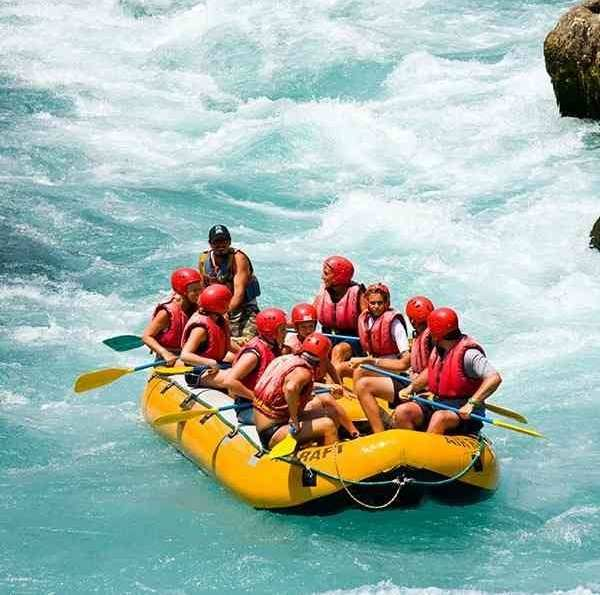
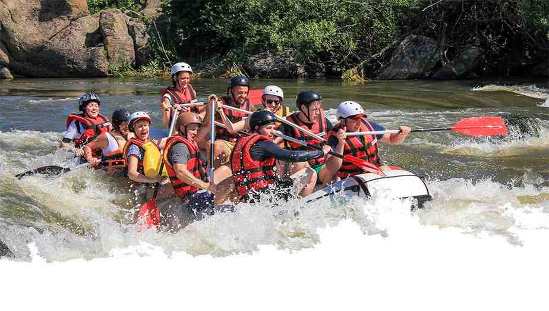

Experience the thrill of rafting amid the scenic beauty and rich culture of Abeokuta. Our rafting tours take place along the Ogun River, offering smooth currents, gentle rapids, and lush riversides that let you connect with nature like never before.


The Rapids
History
Our rafting story began in Abeokuta, inspired by the mighty Ogun River and the adventurous spirit of its people. What started as small weekend paddles grew into organized tours, welcoming families, students, and thrill-seekers from across Nigeria. With trained guides, quality gear, and a commitment to safety, we pioneered rafting adventures in this region. Over the years, we’ve built lasting memories on the river, blending excitement, nature, and culture while sharing the joy of discovery with every guest.